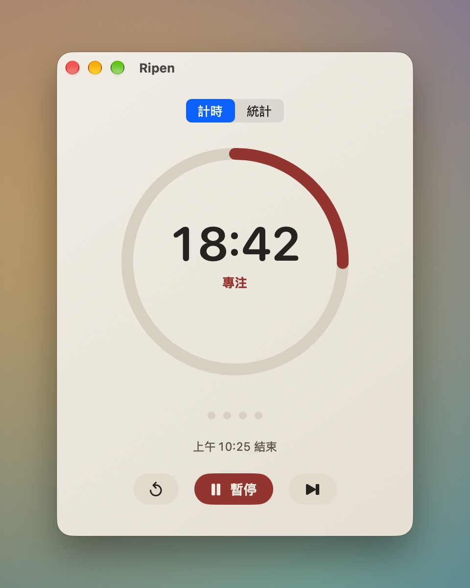
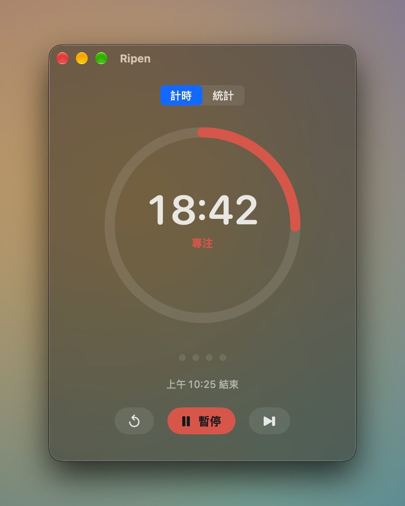
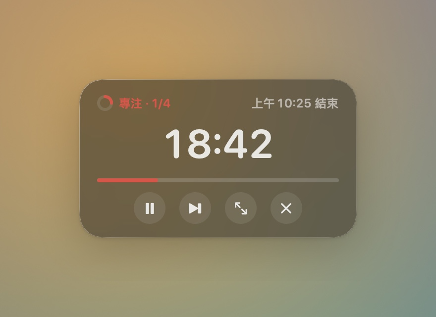
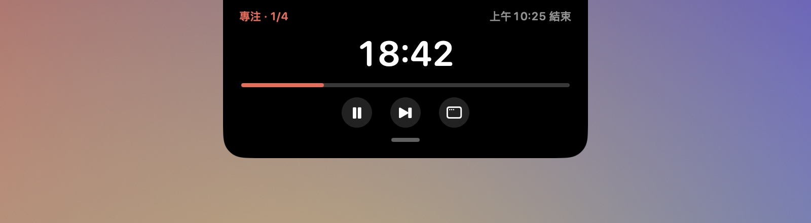
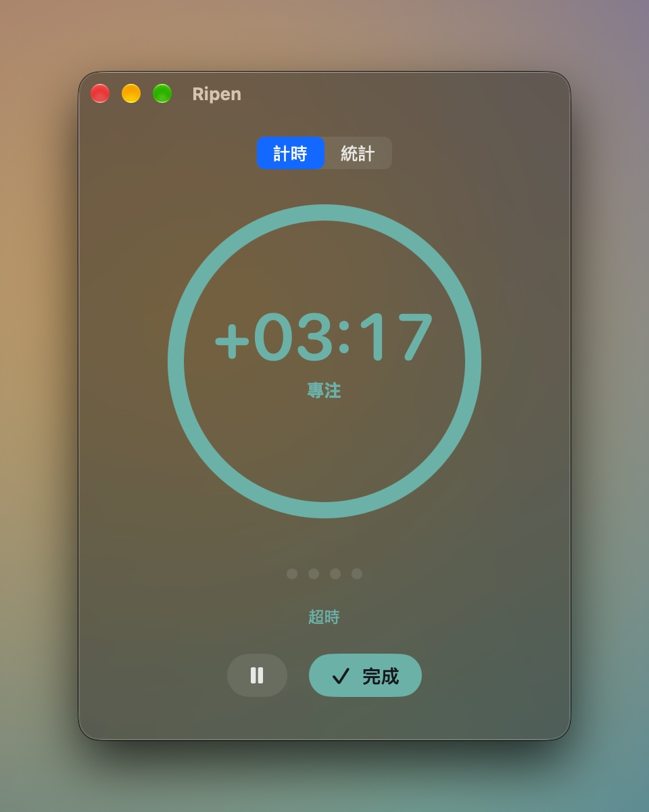

你的紀錄，只留給你
不用註冊、不需要帳號。專注紀錄保存在你的 Mac，不用把一天交給另一個雲端服務。

需要時就在眼前，忙起來就退到一旁。
同一個計時，三種相處方式。

完整控制，安靜地陪你開始。

永遠置頂，三種尺寸，記得你放的位置。

移入展開控制，往下拉回主視窗。沒有瀏海也能用。

給還沒寫完的那一句。
提示音響起後，Ripen 會換個顏色，繼續往上計時。把這個想法寫完，準備好了，再按「完成」。
專注紀錄會算進超時的長度；鎖定或睡眠期間的超時不會持續累加。
不用註冊、不需要帳號。專注紀錄保存在你的 Mac，不用把一天交給另一個雲端服務。
調整專注、短休息與長休息的時間。用全域快速鍵開始或暫停，手不用離開鍵盤。
今天專注幾次、花了多久，還有最近七天的紀錄。簡單看一眼，再回到手上的事。
免費使用，不需要帳號。
如果它剛好幫上忙，再請我喝杯咖啡。
下載後打開 DMG，將 Ripen 拖進「應用程式」。
安裝後可從 App 選單手動檢查更新。
目前版本尚未經 Apple 公證。首次開啟可能需要到「系統設定 › 隱私權與安全性」允許開啟。
可以。目前 Mac 版免費使用，沒有試用倒數，也不用先付款。Ko-fi 是自願支持，不會影響你使用 App。
可以。瀏海島會顯示在螢幕頂端中央；你也可以使用主視窗或置頂懸浮窗。
不會，紀錄保存在你的 Mac。目前沒有跨裝置同步。App 只有在你按「檢查更新」時才會連網查詢與下載版本。
目前只有 Mac 版，手機與手錶版尚未提供。
如果 Ripen 讓你的工作日順了一點，可以透過 Ko-fi 自願支持（另開分頁）。不支持也能完整使用目前的免費版本。
喜歡 Ripen 的話，一杯咖啡就是很好的鼓勵。